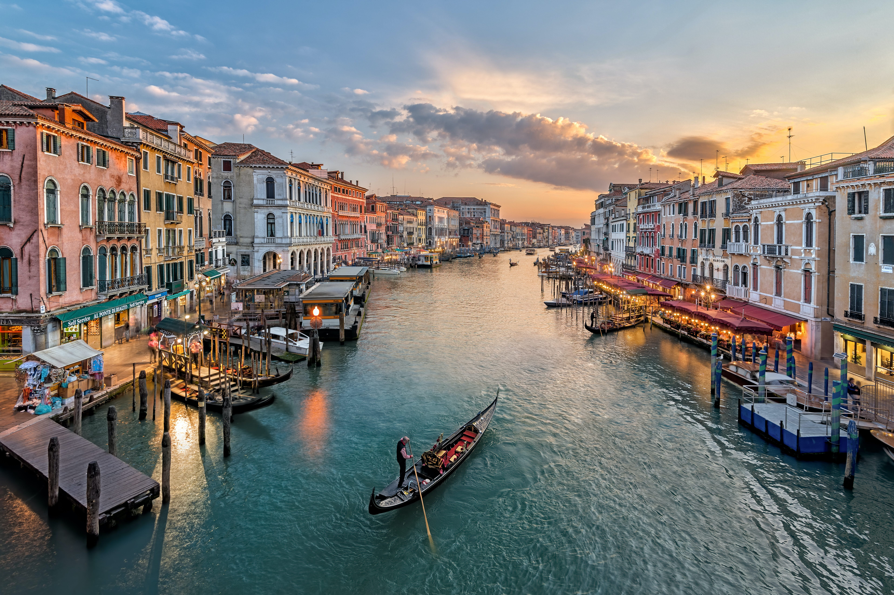
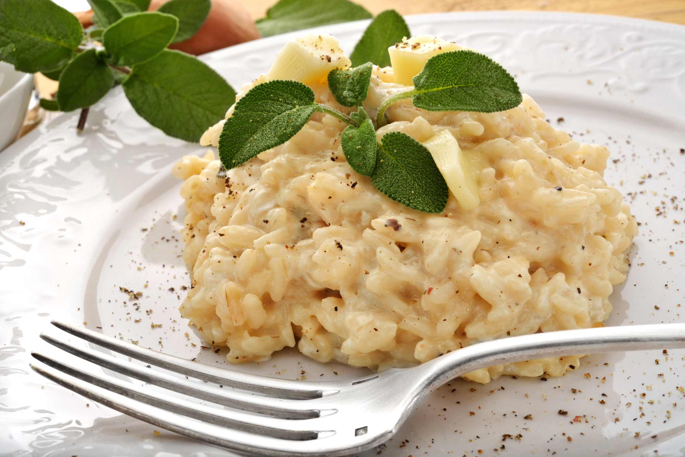

İTALYA
Avrupa medeniyetinin beşiği, tarihi ve kültürüyle göz kamaştıran İtalya her dönem seyahatin ana merkezi konumunda oluyor.
Hem turistler hem de seyahat uzmanları tarafından popülerliğini sürdüren
İtalya dünya turizminin 2022 yılı verilerine ilişkin UNWTO verilerine göre en çok turist çeken ilk 10 ülke arasında yer alıyor.
Sanatı, mimarisi, köklü tarihi, yemekleri ve şehirleriyle herkesi büyüleyen İtalya, birbirinden güzel gezilecek yerlere sahip.
Bu yerlerden birkaçını sizin için derledik.
İtalya'nın Genel Özellikleri
İtalya, Güney Avrupa’da benzediği çizme şekliyle dikkat çeken İtalya Yarımadası’nda yer alır. Akdeniz’de bulunan en büyük adalar Sicilya ve Sardunya da İtalyan toprakları olarak kabul edilir.
Roma İmparatorluğu başta olmak üzere birçok köklü medeniyetin yuvası olan İtalya, turistlerin en çok tercih ettiği ülkedir.
İtalya’nın başkenti Roma aynı zamanda kültür, sanat, gastronomi ve modanın da başkenti. Ayrıca Hristiyanlık için önem taşıyan Vatikan’da bulunur.
Ne Zaman Gidilir?
İtalya’nın farklı kesimlerinde enlem değişikliklerinden dolayı farklı iklimler görülür. Ülkenin kuzey kesiminde hava nemliyken, deniz kıyıları ve orta bölümlerde yarı tropikal iklim hâkimdir.
Akdeniz’e kıyısı olan sahil kesimlerinde Akdeniz ikliminin hâkim olduğu görülür. Bu bölgelerde, Türkiye’de Akdeniz ikliminin hâkim olduğu yerlerde olduğu gibi, yazlar sıcak, kışlarsa ılıktır.
Alp Dağları’nın olduğu kısımlardaysa sert iklim koşulları yaşanır. Bu bölgelerde yazlar kısa sürerken kışlar kar yağışlı ve soğuktur.
İtalya’nın geneli için düşünüldüğünde İtalya seyahati için en doğru zaman Nisan ve Ekim ayları arası. Tabii bu durum bölgelere göre değişkenlik gösterebilir. İtalya’nın güney sahil şeridi yaz aylarında deniz tatili için tercih edilir.
Kuzey kesimlerinde havaların geç ısındığı göz önünde bulundurulduğunda Haziran, turizmin başladığı aydır. Alp Dağları’ndaki kış turizmi de Aralık ve Mart ayları arasında gerçekleşir.
Nasıl Gidilir?
Avrupa’nın en sevilen turizm ülkelerden biri olan İtalya’nın başkenti Roma’ya hem Ankara’dan hem de İstanbul’dan uçuşlar bulunuyor. İstanbul’dan Milano, Venedik, Cenova, Pisa, Bolonya, Torino, Katanya gibi şehirlere de direkt uçuşlar var.
Tarihi ve Kültürü
Tarihinde Roma İmparatorluğu gibi köklü bir devletin yer aldığı ve Hristiyanlık için büyük önem taşıyan Vatikan’a ev sahipliği yaptığı için İtalya önemli bir kültürel bir birikime sahip. Dolayısıyla Avrupa’nın kültürel mirasına büyük katkı sağlar.
İtalya görsel sanatlar konusunda tarihin her döneminde gelişme göstermiş bir ülke. Sanat tarihinde önemli işlere imza atmış Michelangelo, Leonardo da Vinci, Caravaggio, Botticelli gibi ressamlar İtalya’nın önemli değerleri arasında bulunur.
İtalyan Edebiyatı’na bakıldığında yine tarihin önemli isimleri ve eserleri sayılabilir. Orta Çağ Avrupası’nın en önemli eserlerinden sayılan İlahi Komedya, İtalyan yazar Dante Alighieri’nin eseridir. Giordano Bruno ve Niccolo Machiavelli de İtalyan Edebiyatı’nın önemli yazarları arasındadır.
Festivaller ve Fuarlar
İtalya’nın birçok kasabasında geleneksel festivaller kutlanıyor. 5-6 Ocak’ta Epifani ve Befana, 25 Nisan’da Festa Della Madonna Bruna, 19-20 Mayıs’ta Festa Della Sansa, 5-7 Temmuz’da L’Ardia di San Constantino gibi festivaller İtalya’nın en bilinen etkinliklerinden.
İtalya’nın en ünlü klasik müzik festivali olan Festival Del Maggio Musicale Florentino Mart-Haziran ve Eylül-Aralık ayları arasında yapılır. Bu festival dünyaca ünlü şefleri ve orkestraları ağırlar.
İtalya’nın uluslararası festivalleri arasında, dünyanın en eski festivallerinden olan Venedik Uluslararası Film Festivali de bulunuyor. Cannes ve Berlin Film Festivalleri’nden sonra dünyanın en prestijli festivali olarak kabul edilir.
İtalya'da Gezilecek Yerler
- Kolezyum
İtalya’nın başkenti Roma’da bulunan bu yapı Flavianus Amfitiyatrosu olarak da biliniyor. Şehrin en çok turist ağırlayan ve sembolü haline gelen Kolezyum, dünyanın en büyük amfitiyatrosu özelliğine sahip.
MS 72 yılında yapımı başlanarak yaklaşık 8 yılda tamamlanıyor.
Yapılış amacı halkı eğlendirmek için gladyatör dövüşleri, tiyatrolar, hayvan avları gibi etkinlikleri sergilemek iken daha sonrasında barınma yeri, dükkan ve türbe gibi çeşitli amaçlarla kullanılmak için dönüşüme uğruyor.
Sayısız kemerli mimarisi ve üst kemerlerdeki gladyatör figürleriyle tam bir tarihi başyapıt. 2007 yılında Dünyanın Yeni Yedi Harikası'ndan biri olarak seçilerek şehrin en ikonik simgesi olmanın hakkını veriyor.
ÖNERİMİZ:
Büyük sırt çantası veya valiz ile ziyaretçi kabul edilmediğinden çanta boyutu konusunda dikkatli olmanızı öneririz.
- Vatikan Müzeleri
Her yıl 6 milyondan fazla ziyaretçi ağırlayan ve dünyanın en popüler müzelerinde ilk sırada yer alan Vatikan Müzesi, Vatikan’da bulunuyor. 7 kilometre uzunluğunda bulunan bu müze aslında 6 müze, 5 galeri, Sistina Şapeli ve Borgia ve Raphael Odaları’ndan oluşuyor.
Herkesin hayran kaldığı heykeller, muhteşem tavan resimleri ve tarihi eserlere ev sahipliği yapan Vatikan Müzesi, tarih severler ve sanat aşıkları için tam bir cennet.
- Pisa Kulesi
İtalya denildiğinde herkesin aklına gelen ilk yer kuşkusuz Pisa Kulesi oluyor. Eğik yapısıyla dikkatleri üstüne çeken bu kule 55 metre yükseklikte olup 294 basamaklı merdiven ile üzerine çıkılıyor.
Yapımı bitirildiği tarihten itibaren güneye doğru eğilmeye başlayan Pisa Kulesi her yıl milimetrenin onda yedisi kadar eğilmeye devam ediyor.
Pisa kentinin gücü ve zenginliğinin bir sembolü olarak Cenova ile Venedik’e rakip olarak yapılan kule, UNESCO Dünya Mirasları Listesinde yerini alıyor.
Pisa Kulesi hakkında daha fazla bilgi keşfetmek için yazımıza göz atabilirsiniz.
- Venedik
Lagün sistemi üzerine kurulan, masal şehri olarak anılan İtalya’nın benzersiz şehri Venedik. 118 ada ve bu adalar arasındaki 170 kanaldan oluşan şehir, kanalların üzerindeki 400 adet köprü sayesinde ulaşımı sağlıyor.
Tabii ki şehrin simgesi haline gelen gondollar yüzyıllardır ulaşımda tercih edilen araçlardan biri. Mimari estetiğiyle adeta bir marka haline gelen Venedik’i görmeden İtalya gezinizi tamamlamayın.

- Pompei
Pompei, İtalya’nın kısmi özerk bölgesi olan Campania’da bulunan ve hala kısmi gömülü şekilde olan bir kent.
Vezüv Yanardağı’nın patlaması sonucuyla gömülerek yok olan kent 1748 yılında tesadüfen keşfediliyor. Yapılan kazılar sonucunda şehrin yapısı ve halk yaşantısı hakkında birçok bilgi elde edilse de henüz tam anlamıyla keşfedilmiş değil.
Bu kentte birçok villa, amfitiyatro, dükkanlar ve hamamları görmek mümkün. Ayrıca yanardağı patlaması sonucunda taşlaşmış insan bedenlerini de sergi içerisinde görebilirsiniz.
- Trevi Çeşmesi
Ülkemizde Aşk Çeşmesi olarak ün salmış olan Trevi Çeşmesi, her yıl 10 milyona yakın turistin ziyaret ettiği popüler yerlerden biridir.
Üç yol anlamına gelen Trevi sözcüğünün çeşmenin altından 3 yeraltı suyunun birleştiği için buraya verildiği düşünülüyor. Roma’nın en büyük Barok tarzında olan bu çeşme, mimari yapısıyla tam bir şaheser.
Roma Aşk Çeşmesi üzerine çeşitli inanışlar geliştirilmiştir. Bunların ilki çeşmeye arkanız dönük bir şekilde durup omzunuzun üzerinden para attığınız takdirde Roma şehrine tekrardan geleceğinizdir.
Bunun yanı sıra pek çok insan para attığı esnada dilek tutmanın dileklerinin kabul olmasını sağlayacağına da inanmaktadır.
- Panteon Tapınağı
Anlam olarak ‘’tüm tanrıların tapınağı’’ anlamına gelen Panteon, Antik Roma döneminde tüm tanrılar adına inşa edilen bir tapınak. Roma içinde en iyi biçimde korunup günümüze gelen bu yapı tahminen dünyada da en iyi korunan bina olarak biliniyor.
Dönemine göre kusursuz bir şekilde inşa edilen geniş kubbeli çatısı ve bu kubbenin yarım küre şeklinden dolayı mühendislik harikası olarak kabul ediliyor.
- Duomo Katedrali
İtalya’nın en büyük ve görkemli gotik kompleksi kabul edilen Duomo Katedrali, Milano’da bulunuyor. Dışında toplam 2300 heykele ev sahipliği yapan katedral, iç mekanında da 1000 adet heykele sahip.
Yaklaşık 500 yılda tamamlanan bu yapı yüksek mermer sütunları, vitray pencereleri ve tavan süslemeleriyle dikkat çekiyor. Katedralde en çok dikkat çeken eser ise Madonnina yani Altın Heykel adındaki Meryem Ana heykeli.
Bu heykel 4 metre yükseklikte ve altın yaldız kaplamadan oluşuyor.
Ne Yemelisiniz?
Tarih boyunca dünya mutfaklarında önemli bir yere sahip olmayı başarmış ve önemini halen koruyan İtalya mutfağı; sebzeden meyveye, et tavuk ürünlerinden soslara oldukça büyük bir zenginliğe sahip.
Karbonhidrat ağırlıklı İtalyan lezzetleri genellikle oldukça kolay ve hızlı hazırlanıyor. Bunun yanında İtalyan ustalar tarafından yapılan ve tarihin en eski zamanlarından beri dikkat çekmeyi başaran lezzetler, ziyaretçileri büyülüyor.

- Pizza
18. yüzyıl sonlarında Napoli’de ortaya çıktığı düşünülen ve bir gözleme yemeği olarak bilinen pizza, dünyanın her yerinde oldukça popüler. İtalya’nın en önemli lezzetlerinden biri olan pizzanın en sevilen versiyonu ise “Pizza Margherita”.
Pizza farklı lezzet kombinasyonlarına sahip olduğu için vejetaryen gibi farklı beslenme tarzlarına sahip kişiler için de uygun. Birçok farklı pizza restoranında vegan pizzalar da bulabilirsiniz.
- Risotto
Arborio adı verilen küçük taneli özel bir pirinç ile hazırlanan risotto, geleneksel İtalyan yemeklerinden bir diğeri. Kremsi bir yapı haline gelene ve yumuşayana kadar pişirilen pirinç, et suyu ile harmanlanıyor.
Ana yemek olarak servis edilen ve dört mevsim boyunca ilgi gören risotto, deniz ürünleri, sebzeler ya da peynir gibi farklı kombinasyonlar ile servis edilebiliyor.

- Lazanya
İtalya mutfağı makarna başta olmak üzere karbonhidrat ürün gruplarına sıklıkla yer veriyor. Katmanda bir makarna olarak ele alınabilecek lazanya, dünyanın her yerinde popülerliğini koruyor olsa da İtalya’ya özgü bir lezzet.
İsmini lazanya ya da lazanya yaprağı adı verilen ve klasik bir makarna olsa da çok daha büyük ve dikdörtgen şekilde kesilen hamurlardan alıyor. Geleneksel bir İtalyan yemeği olan lazanya, lazanya yaprakları, peynir ve domates bazlı et sosundan oluşuyor.
- Focaccia
Günümüzde sonsuz varyasyonla yapılan ve büyük bir popülerliğe sahip olan focaccia, dünya çapında bilinen ve sevilen bir lezzet. Yapılışı ise oldukça basit. Klasik focaccia yapmak için gerekenler yalnızca;
un, maya, tuz ve zeytinyağı. Malzemeler su ile karıştırılıyor zeytinyağı ile yapılan final dokunuşundan sonra fırına gönderiliyor. İtalya’nın el becerisi yüksek ustaları tarafından yapıldığı takdirde doyum olmaz bir lezzete sahip hale geliyor
- Tiramisu
Dünyanın en popüler tatlılarından biri olan tiramisu, İtalya’ya ait geleneksel bir lezzet. Eriyen zengin ve kremsi dokusu bütün dünya tarafından büyük bir sevgi görmesini sağlıyor. Hafif bir burukluğa sahip olan bu lezzet kahve aromasının baskın olduğu tatlıların arasında yer alıyor.
Soğutulmuş şekilde ve üzerine kakao tozu serpilerek servis edilen tiramisu tıraşlanmış çikolata ile süsleniyor. Kahve ya da espresso ile ıslatılmış pandispanya katmanları ile hazırlanan bu lezzet, İtalya’da tatlı yemek istediğinizde mutlaka tercih etmeniz gereken bir tat.
- Gelato
İtalyan usulü dondurma ismi ile de anılan gelato, klasik dondurmadan önemli farklılıklara sahip. Dondurma ile en benzer özelliği meyve püresinin temelini oluşturması. Meyve püresi ile hazırlanan lezzet ardından kuru yemişler, meyve ve çeşitli aromalar eklenerek; süt, krema, yumurta ve şeker ile yapılıyor.
Gelato, İtalya’da mutlaka denemeniz gereken bir tatlı.